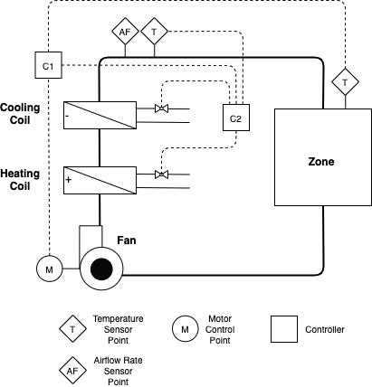
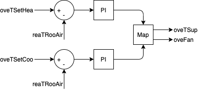
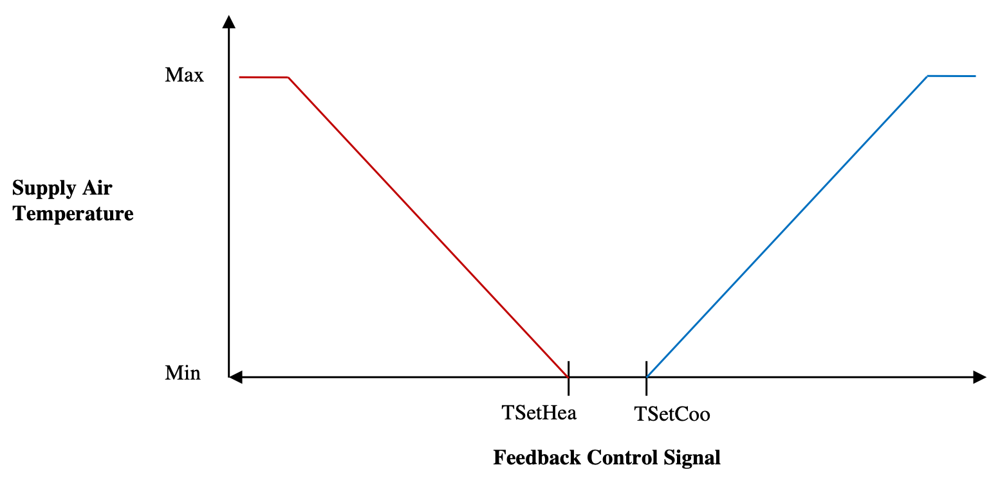

The building is a single room based on the BESTEST Case 900 model definition. The floor dimensions are 6m x 8m and the floor-to-ceiling height is 2.7m. There are four exterior walls facing the cardinal directions and a flat roof. The walls facing east-west have the short dimension. The south wall contains two windows, each 3m wide and 2m tall. The use of the building is assumed to be a two-person office with a light load density.
The constructions are based on the BESTEST Case 900 model definition. The exterior walls are made of concrete block and insulation, while the floor is a concrete slab. The roof is made of wood frame with insulation. The layer-by-layer specifications are (Outside to Inside):
Exterior Walls
| Name | Thickness [m] | Thermal Conductivity [W/m-K] | Specific Heat Capacity [J/kg-K] | Density [kg/m3] |
|---|---|---|---|---|
| Layer 1 | 0.009 | 0.140 | 900 | 530 |
| Layer 2 | 0.0615 | 0.040 | 1400 | 10 |
| Layer 3 | 0.100 | 0.510 | 1000 | 1400 |
| Name | IR Emissivity [-] | Solar Emissivity [-] |
|---|---|---|
| Outside | 0.9 | 0.6 |
| Inside | 0.9 | 0.6 |
Floor
| Name | Thickness [m] | Thermal Conductivity [W/m-K] | Specific Heat Capacity [J/kg-K] | Density [kg/m3] |
|---|---|---|---|---|
| Layer 1 | 1.007 | 0.040 | 0 | 0 |
| Layer 2 | 0.080 | 1.130 | 1000 | 1400 |
| Name | IR Emissivity [-] | Solar Emissivity [-] |
|---|---|---|
| Outside | 0.9 | 0.6 |
| Inside | 0.9 | 0.6 |
Roof
| Name | Thickness [m] | Thermal Conductivity [W/m-K] | Specific Heat Capacity [J/kg-K] | Density [kg/m3] |
|---|---|---|---|---|
| Layer 1 | 0.019 | 0.140 | 900 | 530 |
| Layer 2 | 0.1118 | 0.040 | 840 | 12 |
| Layer 3 | 0.010 | 0.160 | 840 | 950 |
| Name | IR Emissivity [-] | Solar Emissivity [-] |
|---|---|---|
| Outside | 0.9 | 0.6 |
| Inside | 0.9 | 0.6 |
The windows are double pane clear 3.175mm glass with 13mm air gap.
There is maximum occupancy (two people) from 8am to 6pm each day, and no occupancy during all other times.
The internal heat gains from plug loads come mainly from computers and monitors. The internal heat gains from lighting come from hanging fluorescent fixtures. Both types of loads are at maximum during occupied periods and 0.1 maximum during all other times. The occupied heating and cooling temperature setpoints are 21 C and 24 C respectively, while the unoccupied heating and cooling temperature setpoints are 15 C and 30 C respectively.
The climate is assumed to be near Denver, CO, USA with a latitude and longitude of 39.76,-104.86. The climate data comes from the Denver-Stapleton,CO,USA,TMY.
Heating and cooling is provided to the office using an idealized four-pipe fan coil unit (FCU), presented in Figure 1 below. The FCU contains a fan, cooling coil, heating coil, and filter. The fan draws room air into the unit, blows it over the coils and through the filter, and supplies the conditioned air back to the room. There is a variable speed drive serving the fan motor. The cooling coil is served by chilled water produced by a chiller and the heating coil is served by hot water produced by a gas boiler.

For the fan, the design airflow rate is 0.55 kg/s and design pressure rise is 185 Pa. The fan and motor efficiencies are both constant at 0.7. The heat from the motor is added to the air stream. The COP of the chiller is assumed constant at 3.0. The efficiency of the gas boiler is assumed constant at 0.9.
A baseline thermostat controller provides heating and cooling as necessary to the room by modulating the supply air temperature and fan speed. The thermostat, designated as C1 in Figure 1 and shown in Figure 2 below, uses two different PI controllers for heating and cooling, each taking the respective zone temperature set point and zone temperature measurement as inputs. The outputs are used to control supply air temperature set point and fan speed according to the map shown in Figure 3 below. The supply air temperature is exactly met by the coils using an ideal controller depicted as C2 in Figure 1. For heating, the maximum supply air temperature is 40 C and the minimum is the zone occupied heating temperature setpoint. For cooling, the minimum supply air temperature is 12 C and the maximum is the zone occupied cooling temperature setpoint.


fcu_oveTSup_u [K] [min=285.15, max=313.15]: Supply air temperature setpoint
fcu_oveFan_u [1] [min=0.0, max=1.0]: Fan control signal as air mass flow rate normalized to the design air mass flow rate
con_oveTSetHea_u [K] [min=288.15, max=296.15]: Zone temperature setpoint for heating
con_oveTSetCoo_u [K] [min=296.15, max=303.15]: Zone temperature setpoint for cooling
con_reaTSetCoo_y [K] [min=None, max=None]: Zone air temperature setpoint for cooling
fcu_reaFanSet_y [1] [min=None, max=None]: Fan control signal setpoint as air mass flow rate normalized to the design air mass flow rate
zon_reaPLig_y [W] [min=None, max=None]: Lighting power submeter
zon_reaPPlu_y [W] [min=None, max=None]: Plug load power submeter
zon_reaCO2RooAir_y [ppm] [min=None, max=None]: Zone air CO2 concentration
fcu_reaPCoo_y [W] [min=None, max=None]: Cooling electrical power consumption
fcu_reaPHea_y [W] [min=None, max=None]: Heating thermal power consumption
fcu_reaFloSup_y [kg/s] [min=None, max=None]: Supply air mass flow rate
fcu_reaTSup_y [K] [min=None, max=None]: Supply air temperature setpoint
zon_reaTRooAir_y [K] [min=None, max=None]: Zone air temperature
fcu_reaPFan_y [W] [min=None, max=None]: Supply fan electrical power consumption
con_reaTSetHea_y [K] [min=None, max=None]: Zone air temperature setpoint for heating
zon_weaSta_reaWeaSolHouAng_y [rad] [min=None, max=None]: Solar hour angle measurement
zon_weaSta_reaWeaSolDec_y [rad] [min=None, max=None]: Solar declination angle measurement
zon_weaSta_reaWeaSolZen_y [rad] [min=None, max=None]: Solar zenith angle measurement
zon_weaSta_reaWeaLon_y [rad] [min=None, max=None]: Longitude of the location
zon_weaSta_reaWeaCloTim_y [s] [min=None, max=None]: Day number with units of seconds
zon_weaSta_reaWeaSolTim_y [s] [min=None, max=None]: Solar time
zon_weaSta_reaWeaWinSpe_y [m/s] [min=None, max=None]: Wind speed measurement
zon_weaSta_reaWeaNOpa_y [1] [min=None, max=None]: Opaque sky cover measurement
zon_weaSta_reaWeaLat_y [rad] [min=None, max=None]: Latitude of the location
zon_weaSta_reaWeaRelHum_y [1] [min=None, max=None]: Outside relative humidity measurement
zon_weaSta_reaWeaTDryBul_y [K] [min=None, max=None]: Outside drybulb temperature measurement
zon_weaSta_reaWeaCeiHei_y [m] [min=None, max=None]: Cloud cover ceiling height measurement
zon_weaSta_reaWeaHDifHor_y [W/m2] [min=None, max=None]: Horizontal diffuse solar radiation measurement
zon_weaSta_reaWeaHGloHor_y [W/m2] [min=None, max=None]: Global horizontal solar irradiation measurement
zon_weaSta_reaWeaPAtm_y [Pa] [min=None, max=None]: Atmospheric pressure measurement
zon_weaSta_reaWeaTBlaSky_y [K] [min=None, max=None]: Black-body sky temperature measurement
zon_weaSta_reaWeaNTot_y [1] [min=None, max=None]: Sky cover measurement
zon_weaSta_reaWeaSolAlt_y [rad] [min=None, max=None]: Solar altitude angle measurement
zon_weaSta_reaWeaWinDir_y [rad] [min=None, max=None]: Wind direction measurement
zon_weaSta_reaWeaTWetBul_y [K] [min=None, max=None]: Wet bulb temperature measurement
zon_weaSta_reaWeaHHorIR_y [W/m2] [min=None, max=None]: Horizontal infrared irradiation measurement
zon_weaSta_reaWeaHDirNor_y [W/m2] [min=None, max=None]: Direct normal radiation measurement
zon_weaSta_reaWeaTDewPoi_y [K] [min=None, max=None]: Dew point temperature measurement
Artificial lighting is provided by hanging fluorescent fixtures.
There are no shades on the building.
There is no energy generation or storage on the site.
A moist air model is used, but condensation is not modeled on the cooling coil and humidity is not monitored.
The FCU fan is speed-controlled and the resulting flow is calculated based on resulting pressure rise by the fan and fixed pressure drop of the system.
A constant infiltration flowrate is assumed to be 0.5 ACH.
The supply air temperature is directly specified.
CO2 generation is 0.0048 L/s per person (Table 5, Persily and De Jonge 2017) and density of CO2 assumed to be 1.8 kg/m^3, making CO2 generation 8.64e-6 kg/s per person. Outside air CO2 concentration is 400 ppm. However, CO2 concentration is not controlled for in the model.
Persily, A. and De Jonge, L. (2017). Carbon dioxide generation rates for building occupants. Indoor Air, 27, 868–879. https://doi.org/10.1111/ina.12383.
The Peak Heat Day (specifier for /scenario API is 'peak_heat_day') period is:
The Typical Heat Day (specifier for /scenario API is 'typical_heat_day') period is:
The Peak Cool Day (specifier for /scenario API is 'peak_cool_day') period is:
The Typical Cool Day (specifier for /scenario API is 'typical_cool_day') period is:
The Mix Day (specifier for /scenario API is 'mix_day') period is:
The Constant Electricity Price (specifier for /scenario API is 'constant') profile is:
/scenario API is 'constant'.
The Dynamic Electricity Price (specifier for /scenario API is 'dynamic') profile is:
The On-Peak Period is:
The Highly Dynamic Electricity Price (specifier for /scenario API is 'highly_dynamic') profile is:
The Electricity Emissions Factor profile is:
The Gas Emissions Factor profile is: